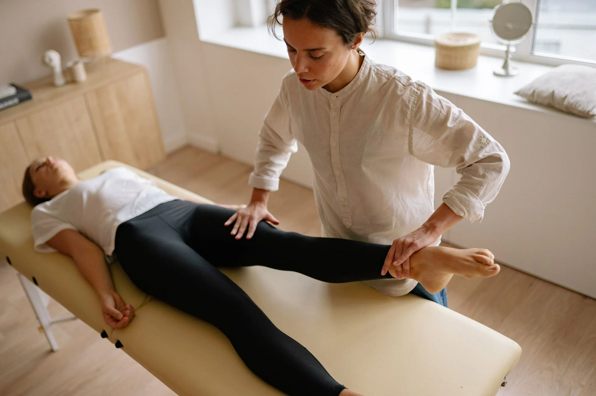

Imagem ilustrativa · não retrata o local ou a equipe
Imagem ilustrativa · não retrata o local ou a equipe01 / Fisioterapia e Pilates · Dra. Bruna Pagotto
Reabilitar e continuar se movendo.
AM Fisioterapia e Pilates. Na AM Fisioterapia e Pilates, em Bady Bassitt, a Dra. Bruna Pagotto (Crefito 449262-F) atende como fisioterapeuta e instrutora de Pilates. O primeiro passo é agendar uma avaliação.
- Fisioterapia
- Pilates
- Crefito 449262-F

Imagem ilustrativa · não retrata o local ou a equipe02 / Conheça a proposta
Fisioterapia e Pilates com a mesma profissional.
Avaliação
O atendimento começa por uma avaliação, como a própria Dra. Bruna orienta no perfil: agende e conte o que você sente.
Fisioterapia
Atendimento feito pela Dra. Bruna Pagotto, fisioterapeuta, com o plano definido a partir da avaliação.
Pilates
Aulas conduzidas pela mesma profissional, que também é instrutora de Pilates.
Do tratamento ao movimento
Quem faz fisioterapia pode continuar no Pilates sem trocar de lugar, a critério da avaliação.
 Imagem ilustrativa · não retrata o local ou a equipe
Imagem ilustrativa · não retrata o local ou a equipe03 / Trajetória & cuidado
Da avaliação ao movimento, no mesmo lugar.
A AM Fisioterapia e Pilates reúne, em uma só profissional, a fisioterapia e o Pilates. No perfil, a Dra. Bruna Pagotto se apresenta como fisioterapeuta, com Crefito 449262-F, e como instrutora de Pilates, e convida a agendar uma avaliação. O atendimento é em Bady Bassitt.
- Fisioterapeuta e instrutora de Pilates: a mesma profissional
- Crefito 449262-F, conforme a bio
- Atendimento começa por avaliação
- Nota 5,0 nas avaliações do Google
 Imagem ilustrativa · não retrata o local ou a equipe
Imagem ilustrativa · não retrata o local ou a equipe04 / Seu próximo passo
Vamos conversar?
Consulte horários, disponibilidade e condições pelo WhatsApp.
Fisioterapia e Pilates · Dra. Bruna Pagotto